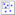

Shapleygui
Introduction
Shapley Values are a game-theoretic approach to explaining an output from an objective function. In Chemometrics, one can use Shapley Values to understand how each variable additively contributes to a prediction. A popular tool for ExplainableAI, Shapley Values can help one understand the prediction behavior for any model type, including nonlinear models like Ann, Anndl, Svm, Xgb. See the instructions on how to calculate Shapley Values from the command-line: Evrishapley.
To start the interface run the 'shapleygui' function from the Matlab command line:
shapleygui
Shapley Values Interface
The Shapleygui is comprised of 3 panels to set up and view the Shapley Values of the model. The first panel is where data and the calibrated model are loaded. The second panel will dictate how Shapley Values will be calculated. The third panel will govern how the Shapley Values are to be viewed.
Load Data and Model
In this panel, one loads samples to be applied to the model as the Explanation X. Shapley Values will be calculated to explain the predictions from those samples. One can load any model type for this application.
Shapley Values will explain a model's predictions from what's known as the 'Explanation X'. There is freedom in choosing the samples for this XBlock. One can use the calibration set, a subset of the calibration set, a class of samples from the calibration set, or validation data. Results might vary depending on what's chosen for these samples but should still fairly represent the model prediction behavior.
There will be Shapley Values for each of the outputs of a model. For example, if an M by N dataset was compressed to M X P by a UMAP model, then Shapley will return a M X N X P matrix. In the interface, one can see how the model predicts for each of the outputs by selecting the predictor in the Plot Settings description.
Shapley Value Settings
Through the interface, there are two things that need to be decided, if Shapley Values are calculated for every variable or done on variable groups, and which samples from the explanation dataset will be used to explain the model.
Define how the Shapley Value calculation will be done. For systems with > 500 variables, it is recommended to group the variables instead of doing Shapley for every variable. One can group variables by setting an interval width > 1, or by manually creating the groups by creating a variable class set.
Plot Settings
View results. One can switch between overall model explanations or sample explanations. Switch between different predictors and plot types to discover trends in model predictions.
Interpreting Shapley Values
Shapley Values is a game-theoretic approach to explain how an individual contributes toward an outcome. In Chemometrics and Data Science, this idea can be applied to understanding how each variable in the dataset contributes to a sample's prediction. Specifically, Shapley Values explain the deviation from a sample's prediction and the model's average prediction on the calibration set. This deviation is divided up amongst all variables and can be done for many samples.
Once a model is calibrated, one can calculate the Shapley Values to understand variable importance. This can be done with a dataset what's known as Explanation X. This dataset is to be applied to the model, and then Shapley Values will be calculated for each of those samples to explain their predictions. This Explanation X can be just the calibration set, a subset of it, a class/class grouping of samples in the calibration set, the validation set, etc.
When Shapley Values are calculated for every sample, they can be aggregated to obtain a variable importance vector for a predictor P. This makes it conducive to compare to absolute value of regression coefficients, Vip, Sratio. Also, variables/variable groups that contribute significantly are good candidates for variable selection.
Because Shapley Values aim to explain any outcome, they work with any model type including Ann, Anndl, Svm, Xgb. This is because the Shapley Value algorithm creates perturbed samples in a methodical way, and then examines the predictions on those perturbed samples.
Group Variables
Shapley Values can be done for every variable or done on groups of variables. To do Shapley Values on all variables, set the interval width to 1. One can group variables by setting an interval width > 1, or by manually creating the groups. For systems with > 500 variables, it is strongly encouraged to group the variables instead of doing Shapley for every variable. Grouping of variables can reduce the computation time significantly and allow for easier interpretation. For Shapley Values done on groups of variables, results will be in a lower resolution than if they were done on all variables but can provide a simpler and perhaps more useful explanation. One can group variables by clicking on the Group Variables button, which will invite the user to create a variable class set that will be used as the variable groupings.
Select Samples
There is freedom in choosing the samples for Explanation X. One can use the full calibration set, a subset of the calibration set, a class of samples from the calibration set, or validation data. Results might vary depending on what's chosen for these samples but should still fairly represent the model prediction behavior.
Plot Settings
There are numerous settings and ways to explain predictions using Shapley Values. See each setting's description below.
Explanation Type
Shapley Values provide explanations for the predictions of each sample that is included in Explanation X. The Shapley Values for a sample summed with the base prediction will equal the prediction of that sample.
One can also aggregate Shapley Values to gain a general understanding of how the model predicts across all samples in Explanation X. There are numerous ways to aggregate this matrix. The most common way is to take the mean of the absolute value of the matrix, which is what's done in the software. For example, a M X N X P Shapley Value matrix will be aggregated to a 1 X N X P matrix. This type of aggregation can lend itself to a simpler explanation of the model since it will show if variables contribute significantly or not, either in the positive or negative direction.
Select Predictor
One can examine the Shapley Values for each predictor from the model. Switch between predictors by clicking on the Select Predictor dropdown.
Plot Type
Different plot types are available to help provide insight. See each plot type and their examples below.
Line, Line+Points, Scatter, Bar
These plot types provide a general explanation of the model by aggregating the Shapley Value matrix across the samples from the Explanation X for a particular predictor P. These plots show which variables are contributing significantly to the sample's prediction in either the positive or negative direction (since it takes the absolute value of Shapley Values). Variables or variable groups that contribute significantly are good candidates for Variable Selection.
Heatmap
This plot type is an image of the Shapley Values for all of the sample's predictions on a particular predictor P. Each pixel coordinate represents a sample and variable/variable group and is colored by its Shapley Value. A subplot of the predictions is shown above the heatmap. One can sort both the image and the sample predictions by any predictor.
One can also click on either plot to highlight samples for further inspection and get the sample index. Undo the highlight by clicking on the  button.
Beeswarm
This is a Scatter plot of all the sample's Shapley Values. If Shapley is done on all variables, then the samples will be colored by the response at that variable, as shown above.
Here is an example of working with a discrete dataset, arch (provided in the toolbox). Here one can see clearly that not all variables are on the same scale, making it hard to draw correlations between the responses and the Shapley Values. One can autoscale the responses by clicking on the checkbox next to the Plot Type dropdown:
If Shapley is done on variable groups, then they won't be colored by the data. If the number of variable/variable groups is 50 or less, then an XJitter will be added to show the density of samples with the same Shapley Values.
Sample Order
Only applicable to the Heatmap plot. Select between different predictors to sort the samples in the Heatmap and Prediction plot.
Saving Results
The results from the calculation can be saved to the workspace or a .mat file. One can do this by clicking on the File>Save Results menu item. One can also save the variables that have the highest magnitude of Shapley for a predictor P. One can do this by right-clicking in the plot and selecting 'Save Variables with Highest Shapley'. One will then be prompted to provide a number of top variables/variable groups to save. Once this number is provided, one can then save the vector of variables with the highest Shapley on that predictor P, lending it to do Variable Selection.